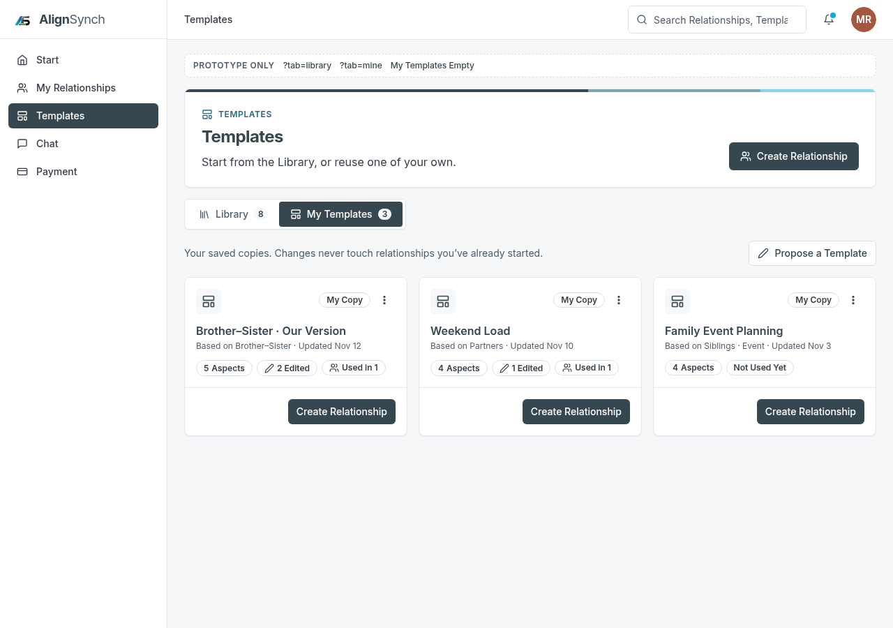
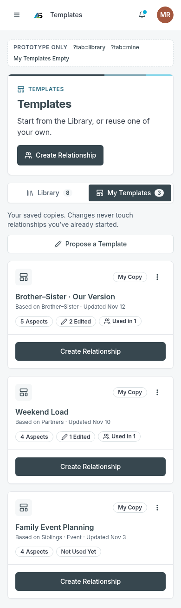
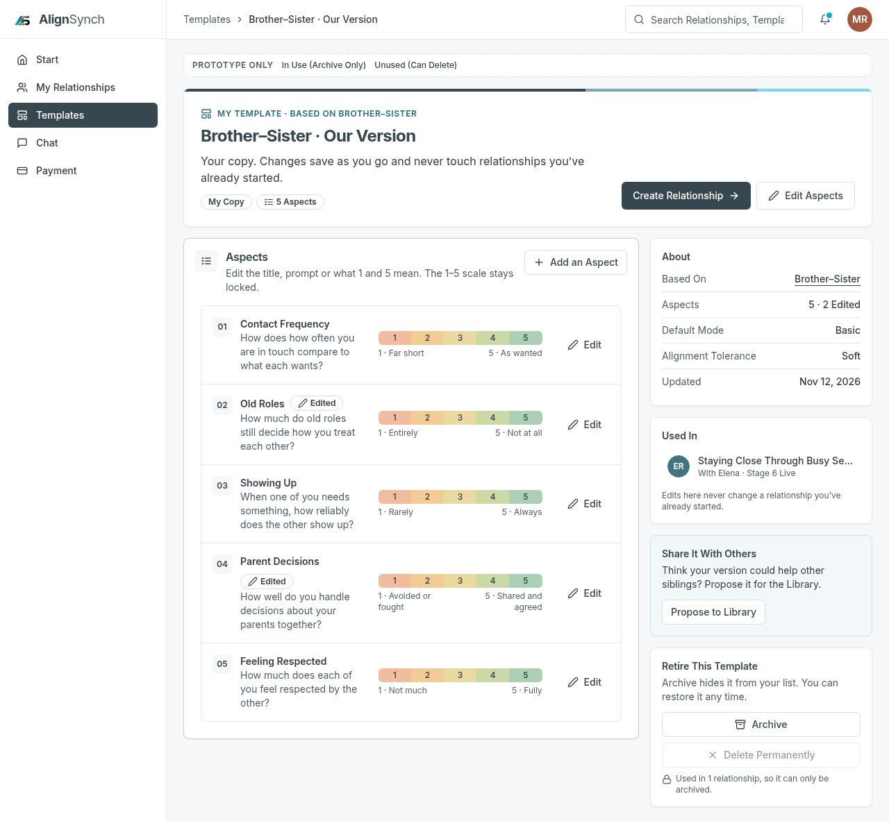
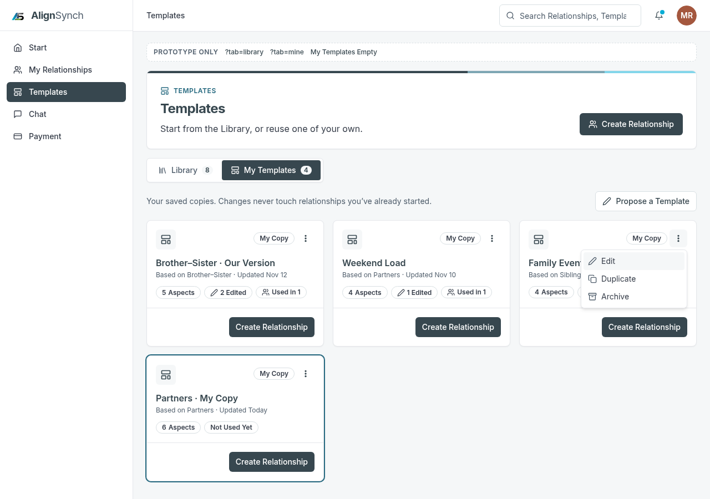
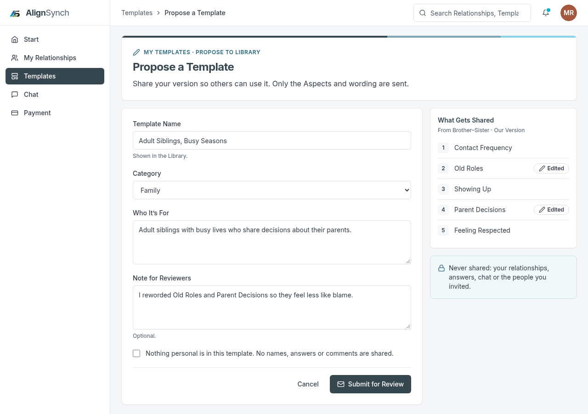

Built (#1151, #1153 via #1170) · design deltas openInitiator
My Templates
Keep and refine your own templates, and never lose one.
When a set of Aspects works for you, save it. My Templates holds the templates you own: copies you saved from the Library, ones you started blank, and ones saved from a relationship. Start a new relationship from any of them, or propose a good one to the Library.
At a Glance
| Action | Where |
|---|---|
| Save a Copy | A Library card’s menu |
| Edit, Duplicate, Archive | A My Templates card’s menu |
| Create Relationship | Any template card |
| Propose a Template | A template’s own page |
How It Works

Initiator · My Templates

mobile

Initiator · My Template detail

Initiator · card menu

Initiator · Propose a Template
Good to Know
- Archive, not delete. An archived template can be restored. Relationships made from it keep their own copy of the Aspects.
For the Build Team
What’s Built Today (main @ 601ce26, v2.0.0-rc1.2 plus #1235–#1237; each quote is on the cited line)
| Citation | Evidence | What it means |
|---|---|---|
data/pages/dashboard-templates.ts:50 |
”{ id: “mine”, label: “My Templates” },” | Tab. |
data/pages/dashboard-templates.ts:141 |
”{ id: “save-copy”, label: “Save a Copy” },” | Library copy. |
data/pages/dashboard-templates.ts:144 |
”{ id: “archive”, label: “Archive” },” | Archive action. |
data/pages/dashboard-template-proposal.ts:21 |
“heading: “Propose a Template”,” | Proposal page. |
Open deltas: confirm a Restore action exists for archived templates; the bundle shows one.
References
| Shot | Source | Original |
|---|---|---|
| my-templates-desktop | Bundle 06 | spec-design-v2-bundles/06-spec-design-page-templates-v2/reference/templates-mine-1280.png |
| my-templates-mobile | Bundle 06 | spec-design-v2-bundles/06-spec-design-page-templates-v2/reference/templates-mine-390.png |
| template-detail-desktop | Bundle 06 | spec-design-v2-bundles/06-spec-design-page-templates-v2/reference/my-template-detail-1280.png |
| card-menu-desktop | Bundle 06 | spec-design-v2-bundles/06-spec-design-page-templates-v2/reference/kebab-my-templates-1280.png |
| propose-desktop | Bundle 06 | spec-design-v2-bundles/06-spec-design-page-templates-v2/reference/template-proposal-1280.png |